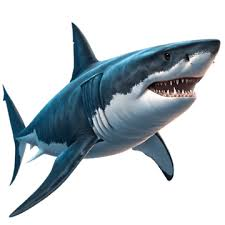
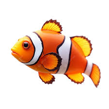
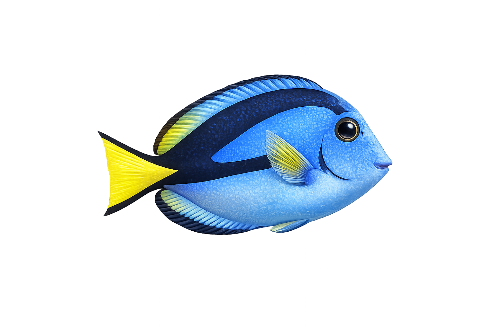

QR kart olmadan balıkları incele, bilgilerini oku ve seslerini dinle.

Okyanus ve denizlerde yaşayan güçlü bir deniz canlısıdır. Koku alma duyusu gelişmiştir ve deniz ekosisteminde önemli bir yere sahiptir.

Tropikal denizlerde yaşayan renkli bir balıktır. Deniz şakayıkları arasında yaşamayı sever ve turuncu-beyaz çizgileriyle tanınır.

Parlak mavi rengiyle dikkat çeker. Tropikal okyanuslarda yaşar, genellikle yosunlarla beslenir ve mercan resiflerinde görülür.